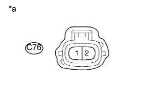

DTC P0489 Низкий уровень сигнала в цепи управления рециркуляцией отработавших газов |
DTC P0490 Высокий уровень сигнала в цепи управления рециркуляцией отработавших газов |
| Режим поездки при обнаружении DTC | Условие обнаружения DTC | Неисправный участок |
| 5 с после запуска двигателя | Обрыв или короткое замыкание в цепи электронного клапана управления разрежением в течение не менее 5 с (логика диагностирования за 1 поездку). |
|
| Режим поездки при обнаружении DTC | Условие обнаружения DTC | Неисправный участок |
| 5 с после запуска двигателя | Обрыв или короткое замыкание в цепи электронного клапана управления разрежением в течение не менее 5 с (логика диагностирования за 1 поездку). |
|
| № DTC | Параметры из Data List |
| P0489 |
|
| P0490 |
| 1.ПРОВЕРЬТЕ ЭЛЕКТРОННЫЙ КЛАПАН ВАКУУМНОГО РАСПРЕДЕЛЕНИЯ В СБОРЕ |
Проверьте электронный клапан вакуумного распределения в сборе (Нажмите здесь).
|
| ||||
| OK | |
| 2.ПРОВЕРЬТЕ НАПРЯЖЕНИЕ НА КОНТАКТЕ (ПИТАНИЕ) |
|  |
Отсоедините разъем электронного клапана управления разрежением в сборе.
Измерьте напряжение в соответствии со значениями, приведенными в таблице.
| Контакты для подключения диагностического прибора | Положение переключателя | Заданные условия |
| C76-1 - масса | Зажигание включено (IG) | 11–14 В |
| *a | Вид спереди разъема со стороны жгута проводов: (к электронному клапану управления разрежением в сборе) |
Подсоедините разъем электронного клапана управления разрежением в сборе.
|
| ||||
| OK | |
| 3.ПРОВЕРЬТЕ ЖГУТ ПРОВОДОВ И РАЗЪЕМ (ЭЛЕКТРОННЫЙ КЛАПАН УПРАВЛЕНИЯ РАЗРЕЖЕНИЕМ В СБОРЕ – ЕСМ) |
Отсоедините разъем электронного клапана управления разрежением в сборе.
Отсоедините разъем ЭБУ.
Измерьте сопротивление в соответствии со значениями, приведенными в таблице ниже.
| Контакты для подключения диагностического прибора | Условие | Заданные условия |
| C76-2 - C93-9 (EGR) | Всегда | Менее 1 Ом |
| Контакты для подключения диагностического прибора | Условие | Заданные условия |
| C76-2 или C93-9 (EGR) - масса | Всегда | 10 кОм или более |
Подсоедините разъем электронного клапана управления разрежением в сборе.
Подсоедините разъем ECM.
|
| ||||
| OK | |
| 4.ЗАМЕНИТЕ ECM |
Замените ECM (Нажмите здесь).
|
| ||||
| 5.ЗАМЕНИТЕ ЭЛЕКТРОННЫЙ КЛАПАН УПРАВЛЕНИЯ РАЗРЕЖЕНИЕМ В СБОРЕ |
Замените электронный клапан управления разрежением в сборе (Нажмите здесь).
|
| ||||
| 6.ОТРЕМОНТИРУЙТЕ ИЛИ ЗАМЕНИТЕ ЖГУТ ПРОВОДОВ ИЛИ РАЗЪЕМ |
Отремонтируйте или замените жгут проводов или разъем.
| ДАЛЕЕ | |
| 7.ПРОВЕРЬТЕ, УСТРАНЕНА ЛИ ДОЛЖНЫМ ОБРАЗОМ НЕИСПРАВНОСТЬ |
Подсоедините портативный диагностический прибор к DLC3.
Сбросьте коды DTC (Нажмите здесь).
Выключите зажигание и подождите не менее 30 с.
Запустите двигатель.
Дайте двигателю не менее 5 с поработать на холостом ходу.
Войдите в следующие меню: Powertrain / Engine and ECT / DTC.
Убедитесь, что DTC не выводится снова.
| ДАЛЕЕ | ||
| ||